1. Avistar
Busca las aves que te rodean con ayuda del radar y tócalas para registrarlas en tu libreta de campo.

Universidad Autónoma de Occidente, Cali
Guía de avistamiento en Realidad Aumentada de las aves del campus UAO.
Usa el celular en vertical y con sonido. Te pediremos permiso para la cámara y el movimiento.
Realidad Aumentada
Abre la cámara y aparecerán aves 3D del campus UAO posadas a tu alrededor. Muévete con el celular como si estuvieras en una jornada de avistamiento y usa estas herramientas:
Busca las aves que te rodean con ayuda del radar y tócalas para registrarlas en tu libreta de campo.
Acerca la vista y descubre las marcas que identifican a cada especie: colores, pico y cola.
Reproduce un canto y el ave que lo reconoce llegará volando para responderte.
Pon flores, frutas, agua, pasto o insectos y aprende qué come cada ave según quién llega.
Toma una foto con el ave en tu entorno real y guárdala en tu libreta.
Tres aves aparecen frente a ti: toca la correcta según el nombre, la pista o el canto. ¡Gana la insignia de Guardián!
En celulares Android compatibles, coloca un ave sobre el piso o una mesa y camina a su alrededor (WebXR).
Funciona en el navegador de Android (Chrome) y iPhone (Safari). Sin cámara, se abre un campus simulado.
Base de datos de aves UAO
Desde 2019 la Escuela de Turismo de la UAO realiza jornadas de monitoreo para conocer la riqueza de aves del campus sostenible. Esta guía se alimenta de esos registros.
especies registradas en el campus
familias
géneros
Tu progreso
Las aves que registres en Realidad Aumentada, tus fotos y tu mejor puntaje del quiz se guardan en este dispositivo.
Un campus para la vida y la biodiversidad
El sur de Cali hace parte de la cuenca del río Cauca, de su antigua red de humedales y del bosque seco tropical. Por eso el campus de la UAO es un refugio donde las aves encuentran lugar para residir, alimentarse, dormir y reproducirse.
Fotografías: Juan Manuel Quintero, Natalia Lenis Sánchez y Diana Carolina Campo Daza. Guía ilustrada de aves UAO 2023.
Apunta al piso o a una mesa y toca la pantalla para colocar el ave.